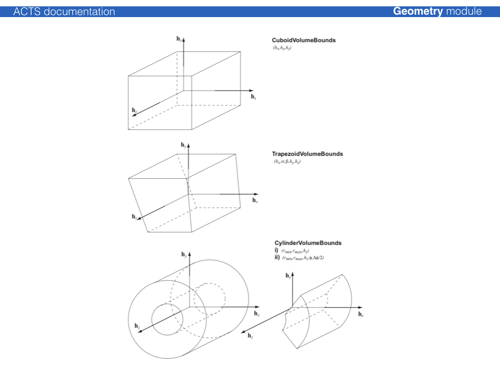

Geometry module
The Acts geometry model is strongly based on the ATLAS Tracking geometry. Its core is built on a surface-based description that make up all geometry objects of higher complexity. This design has been chosen as the surface objects can be used together with the track propagation module and thus all geometry objects become natively integrated into the tracking software.
GeometryObject base class and GeometryID
All geometry objects in Acts inherit from a virtual GeometryObject base class
/// @class GeometryObject
///
/// Base class to provide GeometryID interface:
/// - simple set and get
///
/// It also provides the binningPosition method for
/// Geometry geometrical object to be binned in BinnedArrays
///
class GeometryObject
{
public:
/// default constructor
GeometryObject() : m_geoID(0) {}
/// constructor from a ready-made value
///
/// @param geoID the geometry identifier of the object
GeometryObject(const GeometryID& geoID) : m_geoID(geoID) {}
/// assignment operator
///
/// @param geoID the source geoID
GeometryObject&
operator=(const GeometryObject& geoID)
{
if (&geoID != this) {
m_geoID = geoID.m_geoID;
}
return *this;
}
/// Return the value
/// @return the geometry id by reference
const GeometryID&
geoID() const;
/// Force a binning position method
///
/// @param bValue is the value in which you want to bin
///
/// @return vector 3D used for the binning schema
virtual const Vector3D
binningPosition(BinningValue bValue) const = 0;
/// Implement the binningValue
///
/// @param bValue is the dobule in which you want to bin
///
/// @return float to be used for the binning schema
double
binningPositionValue(BinningValue bValue) const;
/// Set the value
///
/// @param geoID the geometry identifier to be assigned
void
assignGeoID(const GeometryID& geoID);
protected:
GeometryID m_geoID;
};
This class ensures that a unique GeometryID is assigned to every geometry
object. The GeometryID is mainly used for fast identification of the type of
the geometry object (as most are either extensions or containers of the
Surface objects) and for the identification of the geometry surfaces after
building, e.g. for the uploading/assigning of material to the surface after
creation. The GeometryID uses a simple masking procedure for applying an
identification schema.
It is used for Acts internal applications, such as material mapping, but not
for EventData and Geometry identification in an experiment setup, for this
the Identifier class is to be used and/or defined.
typedef uint64_t geo_id_value;
namespace Acts {
/// @class GeometryID
///
/// Identifier for Geometry nodes - packing the
/// - (Sensitive) Surfaces - uses counting through sensitive surfaces
/// - (Approach) Surfaces - uses counting approach surfaces
/// - (Layer) Surfaces - uses counting confined layers
/// - (Boundary) Surfaces - uses counting through boundary surfaces
/// - Volumes - uses counting given by TrackingGeometry
class GeometryID
{
public:
const static geo_id_value volume_mask = 0xff00000000000000;
const static geo_id_value boundary_mask = 0x00ff000000000000;
const static geo_id_value layer_mask = 0x0000ff0000000000;
const static geo_id_value approach_mask = 0x000000f000000000;
const static geo_id_value sensitive_mask = 0x0000000ffff00000;
const static geo_id_value channel_mask = 0x00000000000fffff;
...
};
Surface classes
The Surface class builds the core class of all geometry objects and can be
used natively with the propagation and extrapolation modules. The common
Surface virtual base defines the public interface of all surfaces. The
different concrete Surface classes are defined by their respective native
local coordinate system, while different shapes on surfaces are defined by
SurfaceBounds classes which every surface must provide. In case of boundless
surfaces, a special InfiniteBounds class is available.
| Surface Type | Local Coordinates | Bound Types available |
|---|---|---|
ConeSurface |
[rphi, z] | ConeBounds |
CylinderSurface |
[r, phi] | CylinderBounds |
DiscSurface |
[r, phi] | RadialBounds, DiscTrapezoidalBounds |
PlaneSurface |
[x, y] | RectangleBounds, TrapezoidalBounds, TriangleBounds, InfiniteBounds, EllipseBounds |
PerigeeSurface, StrawSurface |
[d, z] | CylinderBounds |


Layer classes
The Layer class is an extension of the Surface class that allows the
definition of sub surfaces (sensitive surfaces for modules, or extra material
surfaces).
The Layer can simply correspond to a 'virtual' surface in the detector description or represent a more complex object that may contain:
- a representing surface, which is accessible via a
representingSurface() - method an array of contained surfaces, accessible via
surfaceArray()method - approach surfaces (i.e. boundary surface of the volume occupied by the layer)
- surface material description on any of the confined surfaces
The following illustration shows an x-y view of a cylinder layer with planar detection modules:

Modules can be sorted onto layer using all supported binning methods described through the SurfaceArray class,
the binning can be adjusted to fit as good as possible.
The un-occupied space in a volume which contains a layer array is filled with objects of type NavigationLayer, which allows that in a fully static geometry setp, every single point in a volume can be associated with a layer. Layer objects are confined together in a special LayerArray class and can be contained by a TrackingVolume.

Volume classes
The Volume class is a container of BoundarySurface objects, where each
BoundarySurface is an extension of the Surface class with additional
information abouit the attached Volumes. The normal vector of the surface
defines an inside (opposite w.r.t. the normal vector) and an outside (along
w.r.t. the normal vector) direction. Either a single volume or an array of
volumes can be attached to a volume.
The simples volume class is just a collection of surfaces, where the
TrackingVolume describes a volume that can contain:
- an array of contained layers
- an array of contained volumes (as a container volume)
- an array of contained volumes (as floating objects)
- a volume based material description
The shape of the volume is defined by VolumeBounds classes that create the
corresponding bounding surfaces and register the attachment to the volume
itself at creation.

Material description
Two types of material description exist, one for a surface based material, one for a volume based material. They will be dealt with differently in the extrapolation.
The basic information for any material is:
- the radiation length X0 the nuclear interaction length L0 the atomic weight A
- the atomic charge Z the density of the material
This information is confined together in the Material class.
Surface based material extends this material information by representative
thickness, the corresponding object is called MaterialProperties. The
thickness hereby can be arbitrarily chosen in order to regulate the material
budget, it does not have to represent the actual thickness of a detector
element. To attach it to a surface, a dedicated SurfaceMaterial class (or
it's extensions) is used, which allows to also describe binned material.
Possible extensions are:
HomogeneousSurfaceMaterial, homogeneous material description on a surfaceBinnedSurfaceMaterial, an arbitrarily binned material description with a correspondingBinUtilityobjectProtoSurfaceMaterial, only binning description (without material) to be used in the material mapping process
Geometry building
The geometry building procedure follows the ATLAS TrackingGeometry philosophy of a static frame of glued volumes, that lead the navigation flow through the geometry,
Attaching a 3D detector geometry
Usually, a 3D detector model geometry exists, which is either native to the full detector simulation (Geant4) or is translated into it. This model, however, is in general too detailed for track reconstruction: navigating through the detailed detector geometry
For most part of the track reconstruction, only a surface based description of
the detector is needed, in order to allow (surface based) material integration
and parametrisation/prediction of trajectories on detection surfaces. It is
thus necessary that the detection surfaces are described to full detail in the
reconstruction geometry (called TrackingGeometry). This is guaranteed by a
proxy mechanism that connects the detection elements (conveniently called
DetectorElement) to Surface object in the reconstruction:
Existing Plugins for 3D geometry libraries
Very simple helper methods for 3D libraries exist, they are certainly not optimised, but used for templating:
TGeoDetectorElementconnects a TGeo volume to aSurfaceDD4HepDetectorElementconnects a DD4Hep volume (based on TGeo) to aSurface
Layer building
Surface object that are to be grouped on a layer should be put into a
SurfaceArray and provided to the layer. Certain helper tools exist to ease
the translation and create appropriate binning structure:
TheSurfaceArrayCreator can create cylindrical, disc-like & planar layers,
where the dimensions of the layer are determined by parsing the provided
surfaces. Additionally, an envelope covering the surfaces can be chosen.
Volume building, packing and gluing
The philosophy of the TrackingGeometry is a fully connective geometry setup,
i.e. TrackingVolume objects are either pure containers for other contained
TrackingVolume instances (where the contained volumes fully fill the space of
the container volume), or are fully attached via the boundary surface
mechanism. The boundary surfaces then act as portals from one TrackingVolume
into the next one along the trajectory.
The process to create a fully connected tracking geometry is called glueing. Wherever possible, common boundary surfaces are shared, where this is not possible, they are attached.
For cylindrical detector setups, a dedicated CylinderVolumeBuilder is
provided, which performs a variety of volume building, packing and gluing.